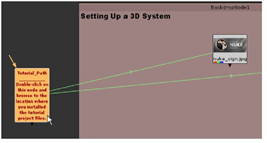
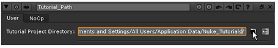
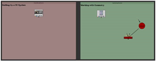

“3Dinteg _ tutor.nk” 项目文件包括本章第一部分的节点树。
| 1。 | 启动 核武器 应用和选择 文件 > 打开 Comp 从菜单栏。 |
| 2. | 在文件浏览器中，导航到 核武器 _ 教程/3 DInteg/ 文件夹中，选择 3dinteg_tutor.nk 项目文件并单击 打开 . |
| 3. | 找到 Tutorial_Path 节点，位于脚本的左侧，然后双击它以打开其控制面板。 |

| 4. | 单击 “文件夹” 按钮。浏览到安装教程项目文件的位置，然后单击 打开 以选择位置。 |

选择正确的路径后，应清除读取节点中的错误消息，并使用正确的图像更新脚本中的缩略图。
| 5. | 关闭的 Tutorial_Path 控制面板。然后，选择 文件> 将 Comp 另存为 保存项目文件的副本。 |
| 6. | 将鼠标指针移动到节点图形上，然后按 F 构建项目文件的全部内容。 |
绿色箭头 (线) 显示 Tutorial_Path 节点和读取节点之间的链接。
| 7. | 如果你愿意，按 Alt + E 隐藏表达式箭头。 |
Tutorial_Path 节点将项目文件的位置保存在您的计算机上，因此您不需要在此项目文件的未来会话中重复此操作。
|
 |
|
中的节点树
|
|
|